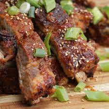

Korean Style BBQ Pork Ribs

Get your fingers sticky with these deliciously saucy Korean style BBQ
ribs
Ingredients
For 2 Servings
For The Sauce:
- 3 tablespoons sesame oil
- 2 teaspoons rice wine vinegar
- 3 tablespoons dark soy sauce
- 4 tablespoons honey
- 30 mL bourbon whiskey
- 15 mL fresh lime juice
- 4 medium cloves garlic cloves, finely chopped
- 2 teaspoons smoked paprika
- 4 tablespoons dark muscovado sugar
- 1 teaspoon red chili flakes
- 2 teaspoons corn flour
- 1 teaspoon sesame seeds
For The Ribs
- 1 whole rack of pork ribs
For the Rub:
- 1 tablespoon kosher salt
- 1 tablespoon pepper
- 1 tablespoon dark muscovado sugar
Preparation:
- Preheat the oven to 150 degrees celsius.
-
Mix together the salt, pepper and sugar for the rub and apply liberally
over the ribs.
-
Wrap entirely in foil and bake in the oven for 2 hours at 150 degrees
celsius / 300 degrees Fahrenheit.
-
In a saucepan, combine all of the sauce ingredients and bring to a boil
then immediately reduce the heat until the sauce thickens and then set
aside.
-
Remove the ribs from the oven and unwrap from the foil. Brush a generous
amount of the BBQ sauce over both sides of the ribs and place back in
the oven for a further 10 minutes.
-
Remove from the oven, brush more bbq sauce on and sprinkle with sesame
seeds.
- Enjoy!